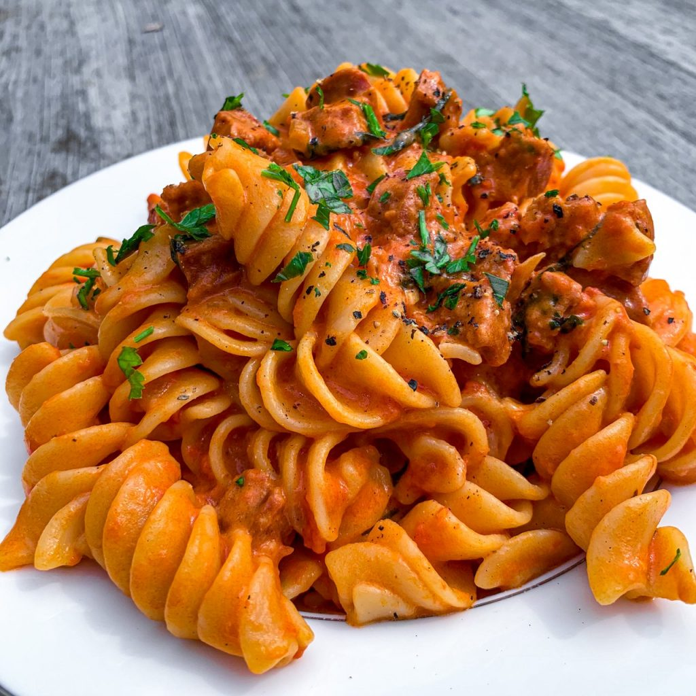

Chorizo Pasta

The best pasta during a cold winter!
Chorizo Pasta will warm you up during winter evenings.
You can spice them up as you like!
Ingredients list
- Fusillis pasta
- Chorizo
- Vegetal oil
- Chorizo
- onions
- Tomatoes
- Herbes de provence
- Salt and pepper
Steps
- Cook Fusillis pasta in boiling water during 10 minutes
- Cut onions and chorizo
- Add Tomatoes to onions and chorizo
- Cook over low heat the chorizo sauce
- Add chorizo sauce to pasta
- Enjoy!